スケッチ帳
練習作品やスケッチ、版画作品などをまとめています。

劇団☆新感線
2016年/ペン画
劇団☆新感線のポスターを見て書きました。一枚に色んな人物がいて書き分けが面白かった。
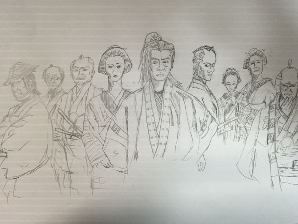
劇団☆新感線 鉛筆
2016年/鉛筆
劇団☆新感線のポスターを見て。ペン画の下書き。
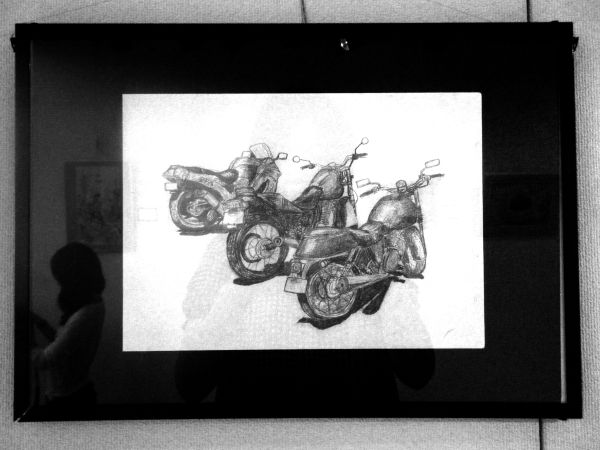
バイクのスケッチ
2007年頃/鉛筆
琵琶湖一周したときのバイクを描いた。
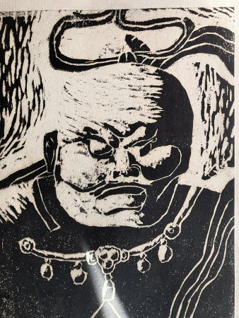
金剛力士像
1995年頃/版画
小学校の時の図工の時間に作成。
阿修羅像が人気だったが、他の人と同じは面白くないので気に入った
金剛力士像を選んだ。
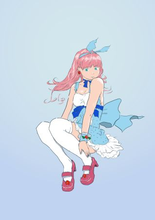
アニメ絵①
2016年頃/PC
窪ノ内栄策さんの作品の模写
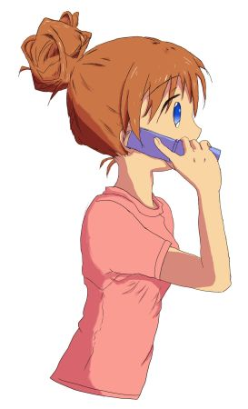
アニメ絵②
2016年頃/PC
アニメ絵の本の模写。
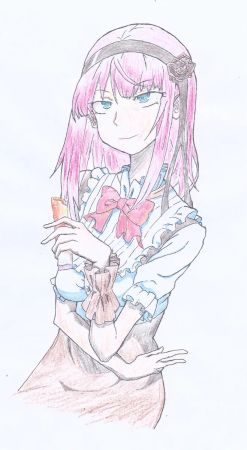
アニメ絵③
2016年頃/鉛筆・色鉛筆
アニメ「だがしかし」の模写。当時流行っていた。
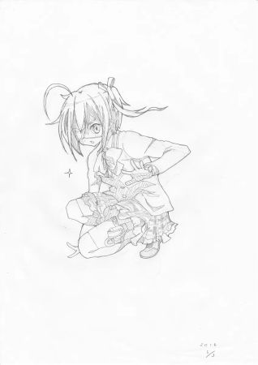
アニメ絵④-1
2016年頃/鉛筆
アニメの模写。京都アニメーションの「中二病でも恋したい」の
キャラクター。
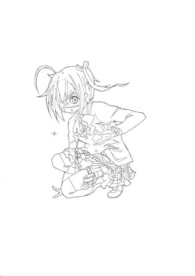
アニメ絵④-2
2016年頃/ペン
アニメの模写
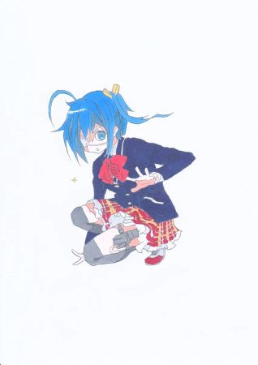
アニメ絵④-3
2016年頃/コピック
アニメの模写
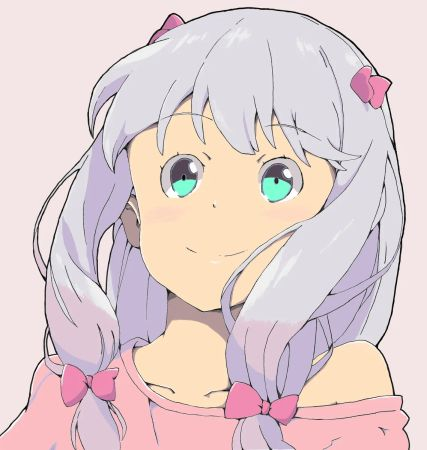
アニメ絵⑤
2016年頃/PC
アニメの模写
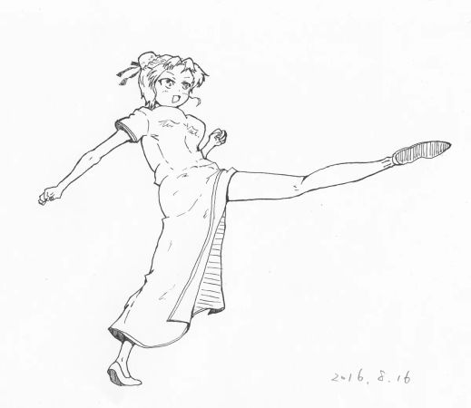
アニメ絵⑥
2016年頃/ペン
アニメ絵の模写
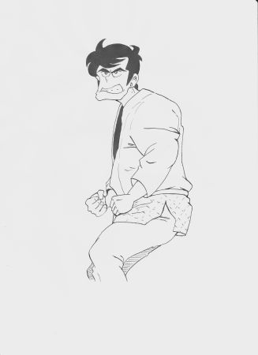
東三四郎
2016年頃/ペン
小林まことの「１，２の三四郎」より
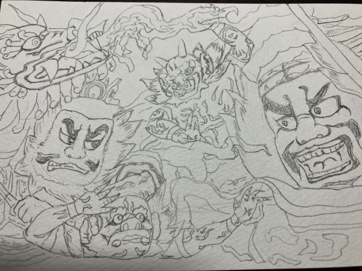
青森のねぶた
2023年/鉛筆
旅行で訪れた青森県のねぶた会館で見たねぶた